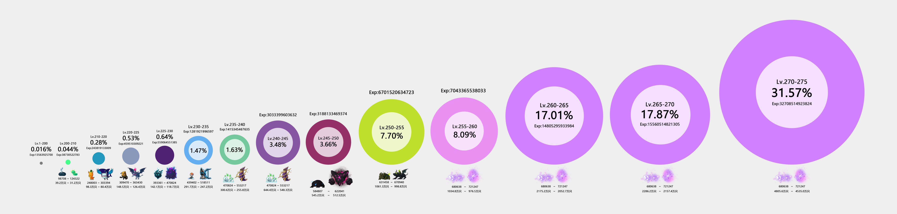

主号练级/刷钱/Node
升级与NODE
各阶段等级需要经验总量及对应怪物只数

Kanna刷钱及挂鬼
kanna revamp review_GMS
两种独立Kanna挂鬼神方式
- 压spanish/sticky key 打拳+鬼神，需要手动离开墙角
- spanish/sticky key 打拳+瞬移，需要手动放鬼 不怕卡角落
鬼神改版后刷图手法
其他farm
7个最佳卖水晶配比(日boss)
收入一共4700万
- h狮子
- n阿卡
- n品客斌
- n麦
- hard森兰丸
- chaos黑龙
- n闹钟
挖矿地图推荐地点
- Korean Folk Town: Goblin House
- Kerning Tower 2F Cafe<4>
- Inside the Mothership : Corridor 202 203 204
- Longest Ride on ByeByeStation
- 2岛以后的热门刷钱地图